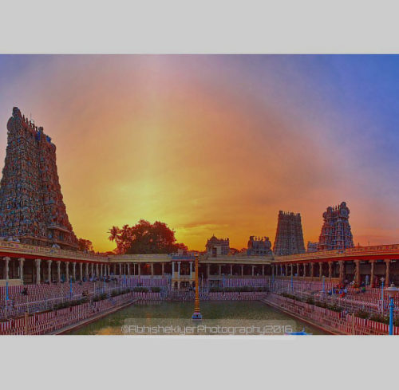

K. Pudur is a peaceful and vibrant locality, known for its friendly people and calm surroundings.
It blends tradition with modern life, making it a special place to call home.
The streets are lively yet serene, with local shops, schools, and parks adding to its charm.
Festivals are celebrated with joy and unity, bringing together people of all ages.
With its balance of culture, comfort, and community spirit, K. Pudur is more than just a place – it is a feeling of belonging.